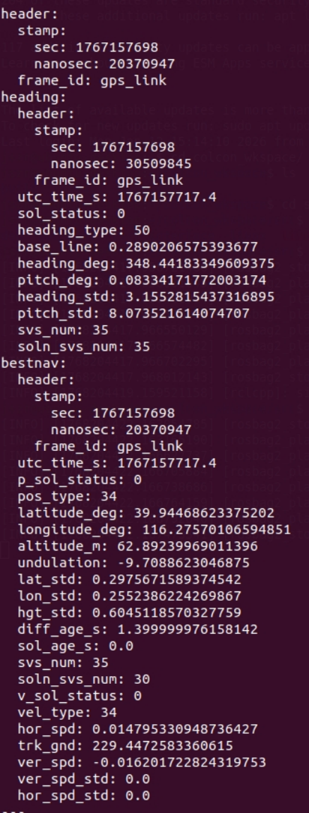

4.4 RTK数据
4.4.1 RTK简介
LK1220D 是六分科技自研的一款工规级全频高精度定位定向模组，最多支持 1040 卫星通道,支持双天线接入。模组可内置高精度 NRTK&定向算法，且具备优秀的抗干扰能力，通过基带内置多频窄带抗干扰单元，提升复杂电磁环境下的信号接收和处理性能。
D1 Max设备内部预留RTK拓展接口，且已安装驱动，如需使用RTK服务，需外接天线(SMA接头)并开通RTK服务账号 ，另外需要通过4G模组访问外网，方可正常使用RTK功能。推荐的rtk天线型号：北天BT560。
Positioning Accuracy:
Horizontal Positioning Accuracy: Single‑point positioning: 1.5m; Differential positioning: 2–3cm; RTK precision: 1cm + 1ppm;
Vertical Positioning Accuracy: Single‑point positioning: 2.5m; Differential positioning: 4–5cm; RTK precision: 1.5cm + 1ppm;
Note 1: Single‑point positioning requires an antenna; differential positioning requires an antenna and an activated RTK service account.
Note 2: RTK precision is measured under the following conditions: high‑precision antenna, open‑sky area, and within 1km of the base station.
4.4.2 获取六分RTK服务
使用从注册的六分账户和密码登录到官网 网址：https://www.sixents.com/login
登录进控制台

获取AK和AS

4.4.3 NX侧RTK服务配置
登录进入NX
首先需要连接机器狗的WIFI，密码默认是 12345678
ssh robot@192.168.168.100 #password: 1
打开配置文件
配置文件路径：sudo vim /ota/sixents_config.ini
Configuration File Description
[sixents_sdk]
sdk_ak =
sdk_as =
sdk_dev_id =
sdk_dev_type =
sdk_ak: 设置您购买服务实例的 AK
sdk_as: 设置您购买服务实例的 AS
sdk_dev_id: 设置您的设备 ID 或 SN（自定义）
sdk_dev_type: 设置您的设备类型（自定义）
注意：sdk_dev_id 和 sdk_dev_type 是和 账户唯一绑定的，之后更改其他的需要去官网解绑
4.4.4 RTK ROS2接口定义
RTK话题名称
RTK对应的话题为：/rtk_pvh

数据说明
类别 |
字段 |
说明 |
|---|---|---|
heading |
utc_time_s |
heading UTC时间 |
sol_status |
解的状态 |
|
heading_type |
定位类型 |
|
base_line |
基线长度，单位米(0~3000) |
|
heading_deg |
航向角，单位度(0~360) |
|
pitch_deg |
俯仰角，单位度(±90) |
|
heading_std |
航向角标准差，单位度 |
|
pitch_std |
俯仰角标准差，单位度 |
|
sys_num |
跟踪的卫星数 |
|
soln_svs_num |
参与解算的卫星数 |
|
bestnav |
utc_time_s |
bestpos UTC时间 |
p_sol_status |
解的状态 |
|
pos_type |
定位类型 |
|
latitude_deg |
纬度，单位度 |
|
longitude_deg |
经度，单位度 |
|
altitude_m |
海拔高，单位米 |
|
undulation |
大地水准面差距，大地水准面与 WGS84 参考椭球面的差值，单位米 |
|
lat_std |
纬度标准差，单位米 |
|
lon_std |
经度标准差，单位米 |
|
hgt_std |
高度标准差，单位米 |
|
diff_age_s |
差分龄期，单位秒 |
|
sol_age_s |
解的龄期，单位秒 |
|
svs_num |
跟踪的卫星数 |
|
soln_svs_num |
参与解算的卫星数 |
|
v_sol_status |
解的状态 |
|
vel_type |
定位类型 |
|
hor_spd |
水平方向对地速度，单位米/秒 |
|
trk_gnd |
相对于真北的实际对地运动方向，单位度 |
|
ver_spd |
垂直方向速度，单位米/秒。正值表示方向向上，负值表示方向向下 |
|
ver_spd_std |
垂直方向速度标准差(未填写) |
|
hor_spd_std |
水平方向对地速度标准差(未填写) |
4.4.5 获取RTK数据
ssh robot@192.168.168.100
ros2 topic echo /rtk_pvh --once